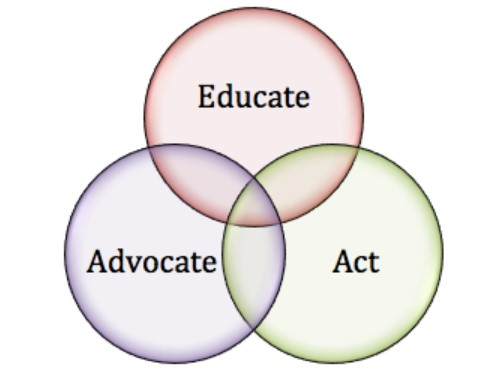

The Children at Risk Advocacy Association is dedicated to protecting and promoting the rights of children who cannot live with their biological families by providing funding for legal education and counsel to the families who care and advocate for them.
CARAA’s Mission
- Ensure foster families have access to professional legal guidance when advocating for children at risk.
- Educate foster families on legal obligations of foster, kinship, guardianship and pre-adoptive care, such as confidentiality and medical advocacy.
- Educate the general public about the contributions that foster, kinship, guardianship and adoptive parents can make in the lives of children.
Vision
Speaking Out, Driving Change for Children Through Research, Awareness and Advocacy.
Meaning of Advocacy
The word ‘advocacy’ takes its roots from the Latin ‘od vocare’ meaning to speak for someone. Proposing or recommending something or someone for better options. It implies identifying a cause, believing in it, mobilizing and influencing others to support it so as to change the policy or program that is negatively affecting that cause.